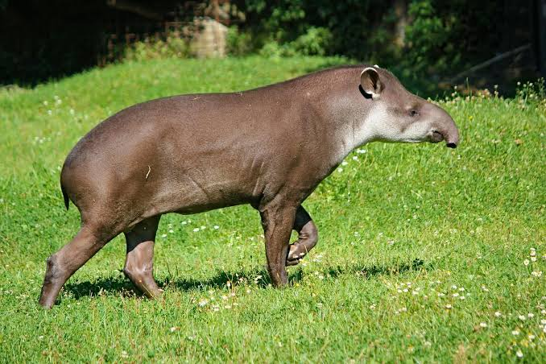
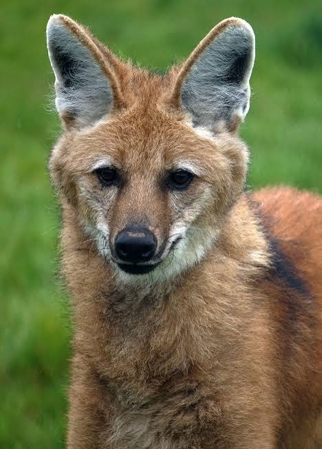
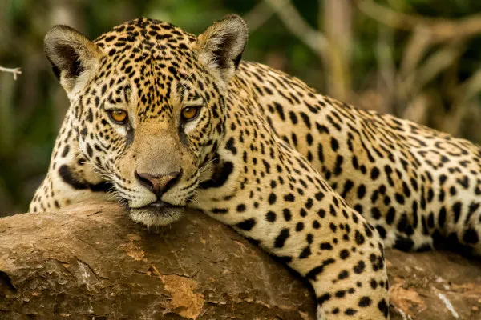

América do SulCaracol
O caracol é um molusco gastrópode de corpo mole e concha calcária espiralada.
Moluscos
Conheça algumas das espécies mais fascinantes da fauna latino-americana, com fotos, curiosidades e dados importantes.

América do SulO caracol é um molusco gastrópode de corpo mole e concha calcária espiralada.

Mata e campoA lula é um animal marinho fascinante pertencente ao filo dos moluscos e à classe dos cefalópodes (mesmo grupo dos polvos e chocos). Elas são conhecidas por sua alta inteligência, agilidade e impressionantes estratégias de sobrevivência.

FlorestaA lesma é um molusco gastrópode terrestre conhecido por seu corpo mole, viscoso e pela ausência de uma concha externa proeminente, o que a diferencia de seus parentes próximos, os caracóis e caramujos.
 Selva
Selva
A vieira é um animal invertebrado marinho, pertencente ao filo dos moluscos e à classe dos bivalves. Possui duas conchas e se alimenta por filtração da água.
 Cerrado
Cerrado
O mexilhão é um molusco bivalve (possui uma concha dividida em duas partes) que vive no ambiente marinho ou em água doce. Eles pertencem principalmente à família Mytilidae e são amplamente conhecidos tanto pela sua importância ecológica quanto pelo seu valor gastronômico e econômico.